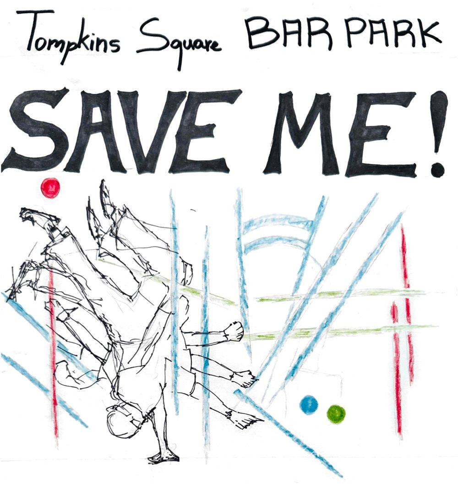

Next meeting: Nov 24
Community Board 3, full board
Tue, Nov 24, 6:30pm. Arrive by 6:15pm.
PS 20, 166 Essex Street
Public comment comes first.
Open in mapsWalk with us
Meet us at the bars in Tompkins Square Park at 5:15pm and walk over together.
Why it matters
Tue, Nov 24, CB3 might allow NYC Parks to use city money to make Tompkins Square Park less affordable, less accessible, and less inclusive.
What should I do?
Show up in person. Bring a sign. Bring your friends, your neighbors, everyone. Ask the board to vote no on NYC Parks' plan, and to ask for a plan that keeps the park open, affordable, compliant, accessible and inclusive.
Can't make it? Forward the invite, sign and share the petition, and contact public leaders.

Art by Joe S.
← More things you can do